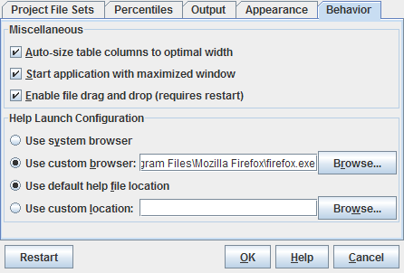

| Prev - Next - Down | SDMetrics - the UML design measurement tool |

Figure 30: Behavior Dialog
Auto-size table columns to optimal width
When this option is enabled, the table columns in all data tables will
individually be sized to minimal width. When this option is disabled,
all table columns in a table initially have equal width.
Start application with maximized window
When this option is enabled, SDMetrics' main window will be fully
maximized on startup. Deselect this option to launch SDMetrics in a
smaller window.
Enable File Drag and Drop
File drag and drop is a convenient way to select an XMI or other
project file (see Section 4.2.1 "Specifying Project Files") for analysis: simply drag the file
from an external file system browser/explorer and drop it into
SDMetrics' main window.
File drag and drop may not work on all combinations of operating system platforms and Java virtual machines. If file drag and drop causes problems on your system, you can disable this feature here. Note: You need to restart SDMetrics for changes to this setting to become effective.
Help Launch Configuration
The help launch configuration specifies the web browser to open the user manual with, and the location of the user manual.
| Prev | Up | Next |
| Section 4.16.4 "Appearance" | Contents | Section 5 "Running SDMetrics from the Command Line" |